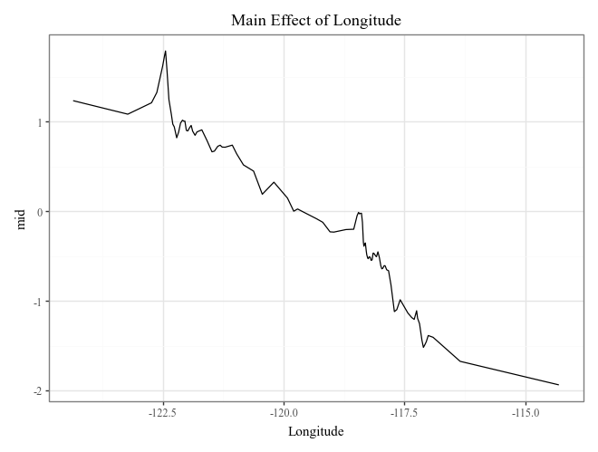
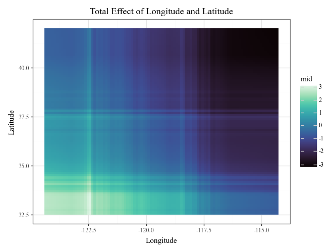

Quick Start
Here’s a basic example of how to use pyramid-learn, or midlearn, to explain a trained LightGBM model, utilizing the familiar scikit-learn API.
import pandas as pd
from sklearn.model_selection import train_test_split
from sklearn.datasets import fetch_california_housing
from sklearn import set_config
import lightgbm as lgb
import midlearn as mid
# Set up plotnine theme for clean visualizations
import plotnine as p9
p9.theme_set(p9.theme_bw(base_family='serif'))
# Configure scikit-learn display
set_config(display='text')
1. Train a Black-Box Model
We use the California Housing dataset to train a LightGBM Regressor, which will serve as our black-box model.
# Load and prepare data
housing = fetch_california_housing()
X = pd.DataFrame(housing.data, columns=housing.feature_names)
y = housing.target
X_train, X_test, y_train, y_test = train_test_split(X, y, random_state=42)
# Fit a LightGBM regression model
estimator = lgb.LGBMRegressor(random_state=42)
estimator.fit(X_train, y_train)
print(estimator)
[LightGBM] [Info] Auto-choosing col-wise multi-threading, the overhead of testing was 0.000309 seconds.
You can set `force_col_wise=true` to remove the overhead.
[LightGBM] [Info] Total Bins 1838
[LightGBM] [Info] Number of data points in the train set: 15480, number of used features: 8
[LightGBM] [Info] Start training from score 2.070349
LGBMRegressor(random_state=42)
2. Create an Explaination Model
We fit the MIDExplainer to the training data to create a globally faithful, interpretable surrogate model (MID).
# Initialize and fit the MID model
explainer = mid.MIDExplainer(
estimator=estimator,
interaction=True,
params_main=100,
penalty=.05,
singular_ok=True,
)
explainer.fit(X_train)
print(explainer)
Generating predictions from the estimator...
MIDExplainer(estimator=LGBMRegressor(random_state=42), params_main=100,
penalty=0.05)
# Check the fidelity of the surrogate model to the original model
print("R-squared score:", explainer.fidelity_score(X_test))
# Visualize the fidelity
p = p9.ggplot() \
+ p9.geom_abline(slope=1, color='gray') \
+ p9.geom_point(p9.aes(estimator.predict(X_test), explainer.predict(X_test)), alpha=0.5, shape=".") \
+ p9.labs(
x='Prediction (LightGBM Regressor)',
y='Prediction (Surrogate MID Regressor)',
title='Surrogate Model Fidelity Check'
)
p
Generating predictions from the estimator...
R-squared score: 0.9493631147465892
3. Visualize the Explanation Model
The MID model allows for clear visualization of feature importance, individual effects, and local prediction breakdowns.
# Calculate and plot overall feature importance (default bar plot and heatmap)
imp = explainer.importance()
display(
imp.plot(max_nterms=20) +
p9.ggtitle("Importance Plot")
)
display(
imp.plot(style='heatmap') +
p9.ggtitle("Importance Heatmap")
)
# Plot the top 3 important main effects (Component Functions)
for i, t in enumerate(imp.terms(interactions=False)[:3]):
p = (
explainer.plot(term=t) +
p9.ggtitle(f"Main Effect of {t}")
)
display(p)

# Plot the interaction of Longitude and Latitude (Component Functions)
display(
explainer.plot(
"Longitude:Latitude",
theme='mako',
main_effects=True
) +
p9.ggtitle("Total Effect of Longitude and Latitude")
)
display(
explainer.plot(
"Longitude:Latitude",
style='data',
theme='mako',
data=X_train,
main_effects=True
) +
p9.ggtitle("Total Effect of Longitude and Latitude")
)

# Plot prediction breakdowns for the first three test samples (Local Interpretability)
for i in range(3):
p = (
explainer.breakdown(row=i, data=X_test).plot() +
p9.ggtitle(f"Breakdown Plot for Row ({i})")
)
display(p)

# Plot individual conditional expectations (ICE) with color encoding
ice = explainer.conditional(
variable='MedInc',
data=X_train.head(500)
)
display(
ice.plot(alpha=.1) +
p9.ggtitle("ICE Plot of MedInc")
)
display(
ice.plot(
style='centered',
var_color='HouseAge',
theme='mako'
) +
p9.ggtitle("Centered ICE Plot of MedInc")
)